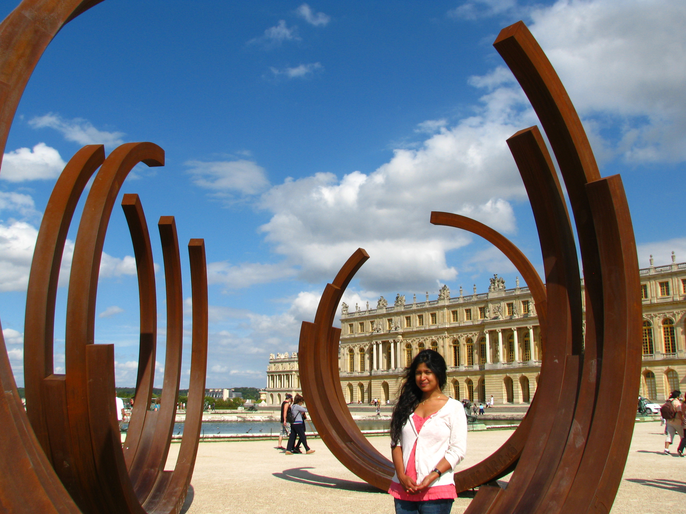

|
Department of Mathematics
Institute of Science Tokyo
2-12-1 Ookayama Meguro-ku
Tokyo 152-8550
Japan
E-mail: somapurkait@gmail.com
|
|

|
I am currently a Specially Appointed Associate Professor at
Department of Mathematics,
Science Tokyo.
My research interests lie broadly in number theory, particularly in modular forms, newform theory, automorphic forms, and representation theory.
Manuscripts in preparation
-
(Joint with M. Chida, S. Wakatsuki) Rankin–Cohen Brackets and Linear Relations
-
(Joint with R. Abdellatif)
p-modular Iwahori-Hecke algebras and their simple modules for the p-adic metaplectic SL_2.
-
(Joint with E. M. Baruch) The GL_2 Hecke Algebra of Level p^2 and Whittaker Functions
Preprints (on arXiv)
-
(Joint with E. M. Baruch, M. Karameris)
Hecke Subalgebras and Local Newforms for the
Metaplectic Double Cover of SL_2(Q_p),, arXiv:2608.29922.
Publications
-
(Joint with E. M. Baruch)
A Hecke algebra of level 4 and associated Whittaker functions, Proc. Japan
Acad. Ser. A Math. Sci. 101(4) (2025), 19–23.
-
(Joint with Jerome Dimabayao)
A variant of the congruent number problem, Kyushu Journal of
Mathematics 78(2) (2024), 413–432.
-
(Joint with E. M. Baruch)
Newforms of half-integral weight: the minus space of S_{k+1/2}(Γ_0(8M)), Israel Journal of Mathematics, vol 232 (2019), 41-73.
-
(Joint with E. M. Baruch) Newforms of half-integral weight:
The minus space counterpart, Canadian Journal of Mathematics, vol 72 (2020), Issue 2, 326-372.
-
(Joint with E. M. Baruch) Hecke algebras, new vectors and newforms on Γ_0(m),
Mathematische Zeitschrift, Vol. 287 (2017), Issue 1-2, 705-733.
-
(Joint with N. Kumar)
A note on the Fourier coefficients of half-integral weight modular forms,
Archiv der Mathematik (Basel) 102, Vol. 4 (2014), 369-378.
-
Hecke operators in half-integral weight, Journal de Thoérie des Nombres de Bordeaux 26 (2014), no. 01, 233-251.
-
Explicit application of Waldspurger's theorem,
LMS Journal of Computation and Mathematics, Vol. 16 (2013), 216-245.
-
On Shimura's decomposition,
International Journal of Number Theory, Vol. 9, no. 06, (2013), 1431-1445.
-
(Joint with B. Sury)
Some vanishing sums involving binomial coeffcients in the denominator, Albanian Journal of Mathematics,Vol. 2 (2008), 27-32.
Some MAGMA Codes
-
For computing Shimura's decomposition (shimuraspacewtk.m)
-
For computing the Shimura equivalent space of an elliptic curve that comes from theta series of ternary quadratic forms; it includes implementation of Dickson's algorithm (quadratic.m)
Teaching
I am currently teaching undergraduate courses on
Linear Algebra I ,
Linear Algebra II ,
Calculus I ,
Calculus II.
Previously, I taught graduate course on
Modular forms.
At university of Warwick, I was a lecturer of
MA3H1 Topics in Number Theory.
Professional Activities
Co-organizer, 数論幾何学セミナー , Institute of Science Tokyo.
Co-organizer, Zeta functions and their representations, March 2027, RIMS Kyoto.
Co-organizer, 中高生向けイベント「社会の中の数学」, March 2025, Institute of Science Tokyo.
Organizer, Number Theory in Tokyo, March 2023, Tokyo Institute of Technology.
Curriculum Vitae
Here is my CV.
Last updated: September 2026
|